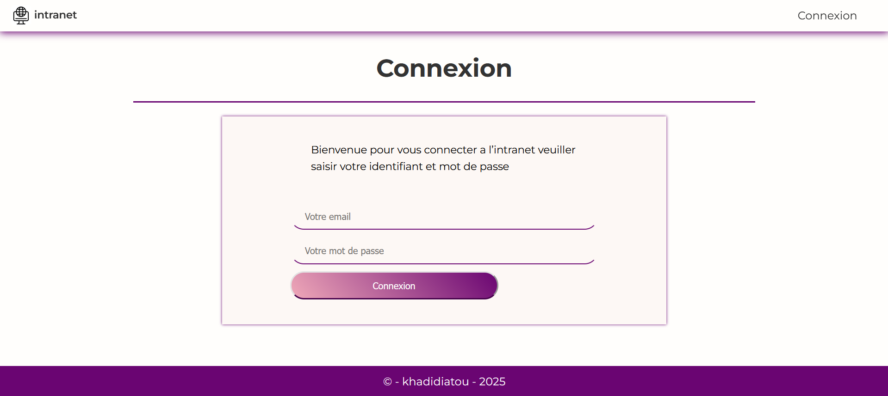
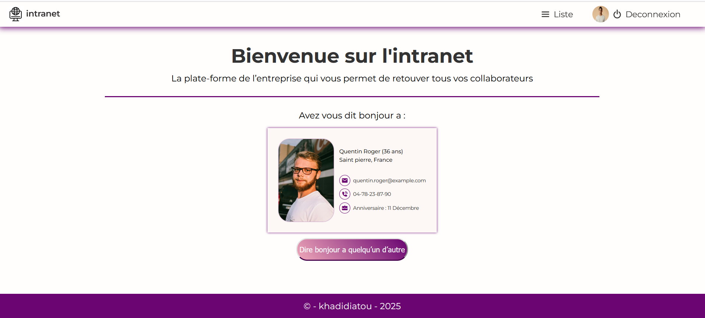
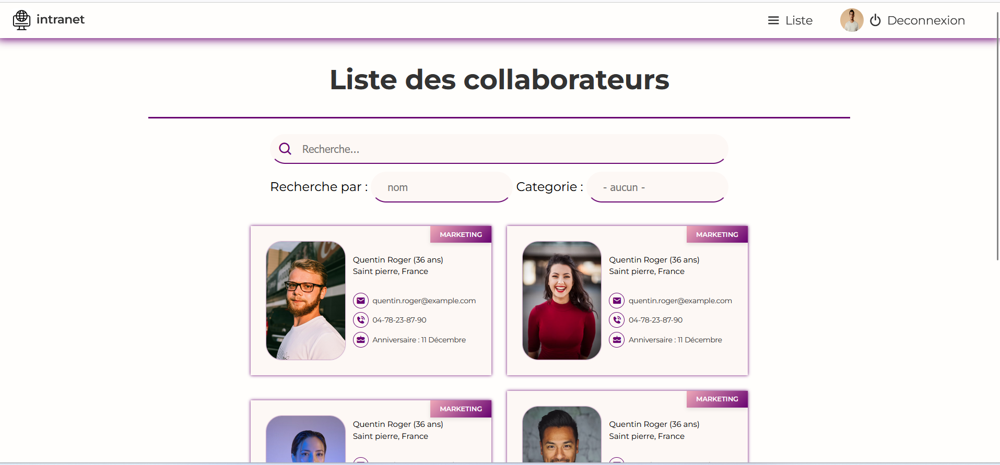

Intranet – Maison des Ligues
📌 Contexte du projet
Dans une entreprise en croissance, un besoin est apparu de faciliter les échanges entre collaborateurs.
Ce projet vise à créer une plateforme Intranet pour renforcer les relations internes.
En tant que développeur Front-End, j’ai conçu un prototype graphique de cette plateforme.
🧱 Stack technique
- Front-end : HTML, CSS, JavaScript
- Back-end : PHP
- Base de données : MySQL
- Outils : Git, GitHub
👤 Fonctionnement pour un utilisateur standard
- Connexion via login et mot de passe
- Affichage aléatoire d’un collaborateur sur la page d’accueil
- Bouton "Dire bonjour à quelqu’un d’autre" → affiche un nouveau collaborateur
- Liste filtrable des collaborateurs (nom, ville, service)
- Page de modification de ses infos personnelles via le profil
- Déconnexion sécurisée empêchant l’accès aux pages protégées
🛠 Fonctionnement pour un administrateur
- Peut ajouter, modifier ou supprimer un collaborateur
- Accès au formulaire d’ajout depuis la barre de menu
- Peut attribuer le rôle d’administrateur à un collaborateur
- Dispose d’un accès élargi aux fiches utilisateurs
🗃 Structure des données
- Nom, Prénom, Email
- Téléphone : Numéro direct
- Date de naissance
- Ville / Pays
- Photo (URL)
- Service : ex. Marketing, Clients, RH…
- isAdm : booléen indiquant si la personne est admin
📎 Liens utiles
🧩 Technologies utilisées
- HTML5 / CSS3
- JavaScript (DOM, filtrage dynamique)
- PHP pour les connexions / sessions
- MySQL pour la base de données
📷 Captures d’écran



🧾 Conclusion
Ce projet m’a permis de concevoir une application complète centrée sur l’expérience utilisateur et la sécurité. Il représente un cas concret d’usage d’un Intranet en entreprise.